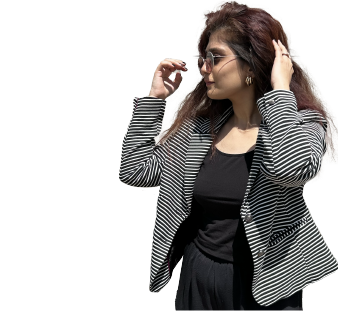

About me
As a Digital designer, my expertise lies in creating visually appealing designs and intuitive user interfaces for digital products. I’ve experience in both print and digital design and passionate about creating user-centered and accessible designs that not only look great but also provide seamless and enjoyable experiences for users.

Experience
SUNY Oswego
Graduate Assistant, Sept 2022 - May 2023
- Updated the official website using Drupal 9 and make it more user friendly which in a 35% increase in website interactions and a 20% decrease in bounce rates.
- The incorporation of modern technology and original designs led to a 45% increase in social media engagement and a 25% rise in poster click-through rates, resulting in an overall better user experience.
- resulted in a 90% reduction in design revisions and a 40% increase in brand consistency across marketing campaigns.
Facilitie services - SUNY Oswego
Graphic Designer, Sept 2022 - Aug 2023
- Assisted faculty members with data collection for potential academic / web publications to include in official website to make the experience user focused.
- By updating the website and incorporating accessibility and inclusive design results in Improved user experience by 15% and increased click rates.
Lloyds Knight International
Graphic Designer, June 2021 - Dec 2021
- Developed original designs for print media, magazines, and social media accounts results in increased user interaction rate by 16%.
- Collaborated with marketing teams to confirm design compliance with brand guidelines and developed medias for the websites to make it more user focused.
Interschange
Graphic Designer, Oct 2019 - Sept 2021
- Designing high quality visuals on larger scale prints results in increase sales and the product popularity.
- Developed original and unique designs for the social medias leads to increase rate of interactivity on the social platforms which also causes the increase in sales of the products.